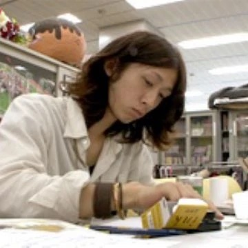

Kohei Horikoshi was born in the Aichi Prefecture of Japan. He developed
a fascination with the fine arts from a young age, and began drawing
when he was a small child. After high school he attended Nagoya
University of Arts, where he frequently practiced the craft of manga
creation outside of the classroom, knowing that his ultimate goal was to
become a successful mangaka. His first job in manga was as an assistant
to Yasuki Tanaka, writer of the popular manga “Summer Time Rendering.”
In 2007, he earned a one-off spot in Shonen Jump, a widely-read manga
anthology and magazine. Eventually, he was able to publish his first
serialized manga in 2010, “Oumagadoki Zoo.” He has written three
different manga series, with the most well-known of the three being a
series called “My Hero Academia.” This manga has been one of the most
popular mangas of the last decade, spawning numerous spin-offs in the
form of tv shows, movies, and video games. It is based in a world where
almost everyone has a special power, known as a “Quirk.” Horikoshi has
stated that his work is influenced by the manga he read as a child, as
well as the superhero comics produced by Marvel.
